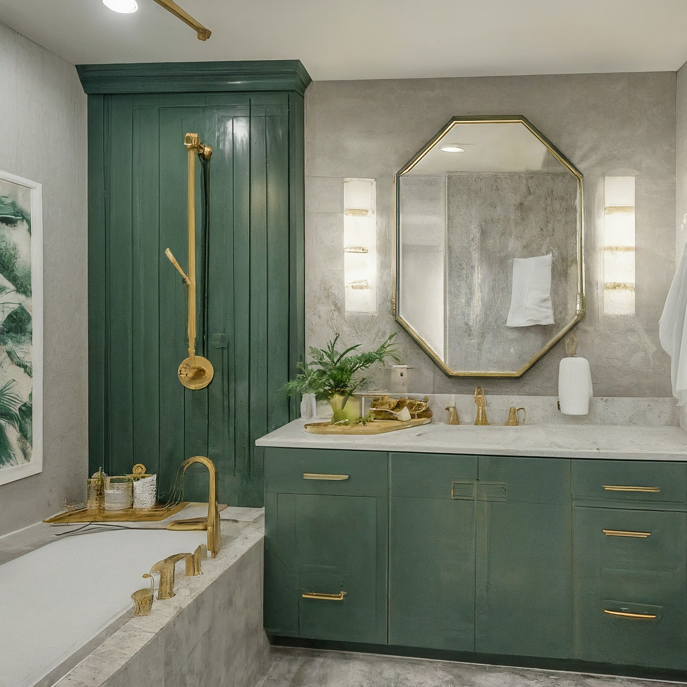

Hollywood Glam Transitional Bathroom Design: Green, Neutral & Gold

Hollywood Glam Transitional Bathroom Design: Green, Neutral & Gold
This design concept aims to create a luxurious and sophisticated bathroom blending the opulence of Hollywood Glam (Hollywood Regency) with the clean lines and timeless appeal of Transitional style. The space will be visually stunning, functional, and promote relaxation with a calming color palette of greens, neutrals, and accents of gold and bronze.
1. Overall Concept and Style
The bathroom will embody the spirit of Hollywood Glamour, characterized by its rich textures, luxurious materials, and dramatic details. However, we will temper this with Transitional elements for a more contemporary and livable feel. This means simplifying some of the more ornate features, creating a space that feels both elegant and comfortable. The aim is to avoid excessive frills and focus on quality materials, balanced proportions, and a sense of refined luxury. The key is to feel like you're stepping into a luxurious spa with a touch of old Hollywood charm.
- Style: Hollywood Glam (Hollywood Regency) meets Transitional
- Feeling: Luxurious, Relaxing, Sophisticated, Spa-like
- Target User: Individuals who appreciate timeless elegance and a touch of glamour in their daily routine.
2. Color Scheme and Materials
The color scheme focuses on creating a serene and sophisticated atmosphere. The green provides a sense of calm and connection to nature, while the neutrals offer a grounding balance, and the gold and bronze accents add a touch of glamour and warmth.
- Main Color: Soft, muted Sage Green (on walls or vanity cabinets). Think a sophisticated, slightly greyed-out green.
- Neutral Base: Creamy Off-White (tiles, countertops, wall trim). This will allow the green to pop and provide a clean backdrop.
- Accent Colors:
- Gold: Used sparingly in lighting fixtures, mirror frames, and hardware for a touch of opulence. Brushed gold finish is preferred for a softer glow.
- Bronze: Incorporated in the shower fixtures, bathtub faucet, and select hardware for a warmer, slightly rustic contrast to the gold. Oil-rubbed bronze is a good choice.
- Materials:
- Flooring: Large format, light-colored (off-white or light beige) porcelain or marble-look tiles. Consider a subtle pattern like herringbone for added visual interest.
- Walls: Painted plaster with a subtle texture or wallpaper with a geometric or botanical pattern in green and neutral tones.
- Countertops: White or off-white quartz or marble. Veining adds a luxurious touch, but avoid overly busy patterns.
- Shower Enclosure: Clear glass with bronze hardware.
- Fixtures: High-quality bronze and gold fixtures.
- Textiles: Luxurious towels in shades of green, cream, and gold.
3. Furniture and Layout
The layout prioritizes space and functionality, with a focus on the statement pieces: the freestanding tub and the walk-in shower.
- Freestanding Bathtub: A classic clawfoot tub (painted in a coordinating neutral) or a sleek, modern freestanding tub with clean lines positioned as a focal point. Place it under a large window if possible, or against a feature wall.
- Walk-in Shower: A spacious walk-in shower with clear glass enclosure to showcase the tiling and fixtures. The showerhead should be rainfall style and include body sprays for added luxury.
- Vanity: A custom-built vanity painted in the sage green color. The vanity should feature ample storage with soft-close drawers and doors. Consider Shaker style doors for a touch of transitional style. A double vanity is ideal if space allows.
- Mirror: A large, statement mirror above the vanity. Consider a geometric or sunburst design with a gold frame.
- Toilet: A comfort-height, elongated toilet with a concealed cistern for a cleaner look.
- Storage: A built-in linen closet or shelving unit painted in a neutral color to provide additional storage space. Add decorative baskets for organization.
- Layout: The layout should create a natural flow between the different zones (vanity, shower, tub, toilet). Aim for a spacious and uncluttered feel.
4. Lighting Design
Lighting is crucial for setting the mood and enhancing the functionality of the bathroom.
- Ambient Lighting: Recessed LED lighting for overall illumination. Dimmer switches are essential to adjust the brightness and create different moods.
- Task Lighting: Sconces flanking the mirror above the vanity. Choose sconces with a gold or bronze finish that complement the other hardware. Consider adding a magnifying mirror with integrated lighting for makeup application.
- Accent Lighting: A chandelier or pendant light above the bathtub to add a touch of glamour and create a focal point.
- Night Lights: Strategically placed LED night lights for safety and convenience.
5. Decorative Elements
These elements will enhance the overall aesthetic and add personality to the space.
- Artwork: Framed botanical prints or abstract art in green, gold, and neutral tones.
- Plants: Green plants, such as ferns or orchids, to add a touch of nature and freshness.
- Accessories: Soap dispensers, toothbrush holders, and other accessories in gold or bronze.
- Towels: Luxurious towels in various shades of green, cream, and gold. Display them neatly on towel racks or shelves.
- Trays: Decorative trays to hold perfumes, lotions, and other personal items.
- Candles: Scented candles to create a relaxing and spa-like atmosphere.
- Window Treatment: Roman shades or sheer curtains in a neutral color to provide privacy and filter the light.
- Hardware: Gold or bronze pulls and knobs on the vanity cabinets.
6. Practical Considerations
- Ventilation: Ensure adequate ventilation to prevent moisture buildup and mold growth. Install a powerful exhaust fan.
- Waterproofing: Proper waterproofing in the shower and around the bathtub to prevent water damage.
- Slip Resistance: Choose tiles with a slip-resistant finish, especially in the shower area.
- Accessibility: Consider accessibility features such as grab bars in the shower and near the toilet if needed.
- Storage: Maximize storage space with built-in cabinets and shelves.
- Easy Maintenance: Choose materials that are easy to clean and maintain.
- Electrical Outlets: Strategically placed electrical outlets for hair dryers, curling irons, and other appliances.
By carefully considering each of these elements, you can create a Hollywood Glam Transitional bathroom that is both beautiful and functional. Remember to personalize the design to reflect your own taste and preferences. Good luck!